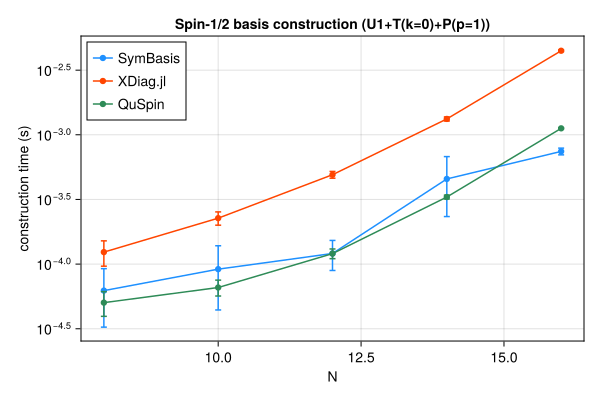
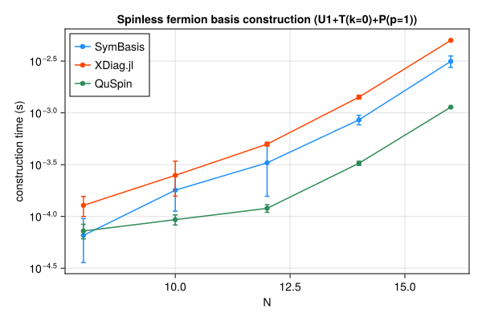
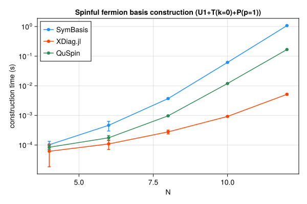
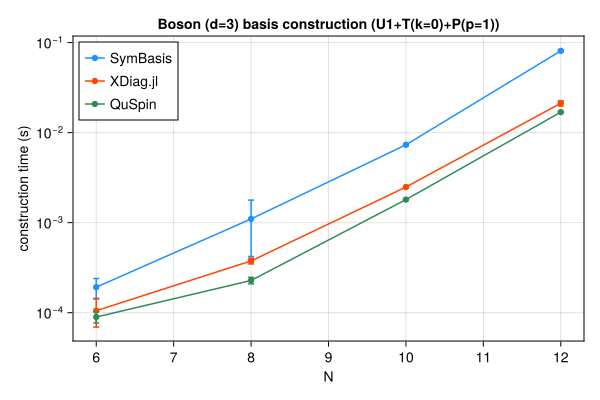

Symmetry-resolved basis construction and representative-state lookup speed, compared against XDiag.jl and QuSpin. SymBasis is benchmarked against its own dev checkout; XDiag.jl and QuSpin are whatever their latest released versions were at the time this page was generated. Regenerated automatically on every SymBasis release.
Threads are left at each library's own defaults (JULIA_NUM_THREADS=auto, OMP_NUM_THREADS unset) rather than pinned to 1 – these numbers reflect out-of-the-box performance, not a strictly single-threaded comparison.
Sweep: BENCH_SWEEP=quick
plot_construction("spin", "Spin-1/2")

| N | config | dim | SymBasis | XDiag | QuSpin | XDiag/SymBasis | QuSpin/SymBasis |
|---|
| 8 | U1 | 70 | 5.487e-05 ± 6.8e-05 s | 4.015e-06 ± 6.3e-06 s | 3.822e-05 ± 1.2e-05 s | 0.07x | 0.70x |
| 8 | U1+T(k=0) | 10 | 8.994e-05 ± 6.7e-05 s | 5.202e-05 ± 3.1e-05 s | 4.564e-05 ± 1e-05 s | 0.58x | 0.51x |
| 8 | U1+T(k=0)+P(p=1) | 8 | 6.239e-05 ± 3e-05 s | 0.0001238 ± 2.7e-05 s | 5.037e-05 ± 1.1e-05 s | 1.99x | 0.81x |
| 10 | U1 | 252 | 3.896e-05 ± 3.7e-05 s | 4.421e-06 ± 6.2e-06 s | 3.58e-05 ± 8.5e-06 s | 0.11x | 0.92x |
| 10 | U1+T(k=0) | 26 | 6.048e-05 ± 3.1e-05 s | 0.0001004 ± 2.6e-05 s | 5.554e-05 ± 1.1e-05 s | 1.66x | 0.92x |
| 10 | U1+T(k=0)+P(p=1) | 16 | 9.143e-05 ± 4.7e-05 s | 0.0002267 ± 2.7e-05 s | 6.592e-05 ± 9.3e-06 s | 2.48x | 0.72x |
| 12 | U1 | 924 | 0.0002772 ± 0.00073 s | 5.692e-06 ± 7e-06 s | 4.366e-05 ± 7.1e-06 s | 0.02x | 0.16x |
| 12 | U1+T(k=0) | 80 | 8.332e-05 ± 3.7e-05 s | 0.0002697 ± 2.8e-05 s | 9.165e-05 ± 1.2e-05 s | 3.24x | 1.10x |
| 12 | U1+T(k=0)+P(p=1) | 50 | 0.0001209 ± 3.2e-05 s | 0.0004913 ± 3e-05 s | 0.0001206 ± 1e-05 s | 4.06x | 1.00x |
| 14 | U1 | 3432 | 0.0001742 ± 0.00016 s | 5.482e-06 ± 6.3e-06 s | 6.55e-05 ± 7.1e-06 s | 0.03x | 0.38x |
| 14 | U1+T(k=0) | 246 | 0.0004599 ± 0.00086 s | 0.000941 ± 0.00017 s | 0.0002234 ± 1.2e-05 s | 2.05x | 0.49x |
| 14 | U1+T(k=0)+P(p=1) | 133 | 0.0004558 ± 0.00022 s | 0.001326 ± 4.8e-05 s | 0.0003302 ± 1.1e-05 s | 2.91x | 0.72x |
| 16 | U1 | 12870 | 0.0005789 ± 0.00049 s | 7.496e-06 ± 1e-05 s | 0.0001515 ± 1.3e-05 s | 0.01x | 0.26x |
| 16 | U1+T(k=0) | 810 | 0.0008677 ± 0.00086 s | 0.003517 ± 4.3e-05 s | 0.0007312 ± 1.5e-05 s | 4.05x | 0.84x |
| 16 | U1+T(k=0)+P(p=1) | 440 | 0.0007441 ± 4.5e-05 s | 0.004466 ± 7.1e-05 s | 0.001122 ± 1.1e-05 s | 6.00x | 1.51x |
| N | config | nsamples | SymBasis | XDiag | QuSpin |
|---|
| 16 | U1+T(k=0)+P(p=1) | 10000 | 2.91e-07 ± 2.5e-09 s | N/A (no decoupled API) | 2.361e-07 ± 1.8e-07 s |
plot_construction("fermion", "Spinless fermion")

| N | config | dim | SymBasis | XDiag | QuSpin | XDiag/SymBasis | QuSpin/SymBasis |
|---|
| 8 | U1 | 70 | 5.685e-05 ± 7.6e-05 s | 3.873e-06 ± 6.5e-06 s | 4.926e-05 ± 1.1e-05 s | 0.07x | 0.87x |
| 8 | U1+T(k=0) | 9 | 0.0003493 ± 0.00025 s | 5.592e-05 ± 3e-05 s | 6.156e-05 ± 9.1e-06 s | 0.16x | 0.18x |
| 8 | U1+T(k=0)+P(p=1) | 6 | 6.559e-05 ± 3e-05 s | 0.0001278 ± 2.8e-05 s | 7.232e-05 ± 1.2e-05 s | 1.95x | 1.10x |
| 10 | U1 | 252 | 0.0003717 ± 0.00026 s | 4.54e-06 ± 6.1e-06 s | 5.02e-05 ± 8.3e-06 s | 0.01x | 0.14x |
| 10 | U1+T(k=0) | 26 | 0.0001257 ± 0.00012 s | 0.0001086 ± 3.3e-05 s | 7.826e-05 ± 1e-05 s | 0.86x | 0.62x |
| 10 | U1+T(k=0)+P(p=1) | 16 | 0.0001793 ± 6.7e-05 s | 0.0002493 ± 9.2e-05 s | 9.303e-05 ± 1e-05 s | 1.39x | 0.52x |
| 12 | U1 | 924 | 0.0002565 ± 0.00023 s | 4.348e-06 ± 6.2e-06 s | 6.449e-05 ± 1.2e-05 s | 0.02x | 0.25x |
| 12 | U1+T(k=0) | 76 | 0.0003015 ± 0.00023 s | 0.0003009 ± 2.5e-05 s | 0.0001135 ± 3e-05 s | 1.00x | 0.38x |
| 12 | U1+T(k=0)+P(p=1) | 33 | 0.0003294 ± 0.00017 s | 0.0004988 ± 2e-05 s | 0.0001197 ± 1e-05 s | 1.51x | 0.36x |
| 14 | U1 | 3432 | 0.0004777 ± 0.00065 s | 5.984e-06 ± 7.3e-06 s | 6.921e-05 ± 1.9e-05 s | 0.01x | 0.14x |
| 14 | U1+T(k=0) | 246 | 0.0004065 ± 3.5e-05 s | 0.001068 ± 7.8e-05 s | 0.0002245 ± 1e-05 s | 2.63x | 0.55x |
| 14 | U1+T(k=0)+P(p=1) | 113 | 0.0008563 ± 9.1e-05 s | 0.001419 ± 6.2e-05 s | 0.0003261 ± 1.5e-05 s | 1.66x | 0.38x |
| 16 | U1 | 12870 | 0.0005123 ± 0.00017 s | 7.088e-06 ± 8.9e-06 s | 0.0001515 ± 1e-05 s | 0.01x | 0.30x |
| 16 | U1+T(k=0) | 809 | 0.001426 ± 0.00033 s | 0.004157 ± 4e-05 s | 0.0007366 ± 8.4e-06 s | 2.91x | 0.52x |
| 16 | U1+T(k=0)+P(p=1) | 422 | 0.003144 ± 0.0004 s | 0.005014 ± 3.6e-05 s | 0.001136 ± 1.3e-05 s | 1.59x | 0.36x |
| N | config | nsamples | SymBasis | XDiag | QuSpin |
|---|
| 16 | U1+T(k=0)+P(p=1) | 10000 | 1.839e-06 ± 3.2e-09 s | N/A (no decoupled API) | 1.868e-06 ± 5.3e-09 s |
plot_construction("spinful_fermion", "Spinful fermion")

| N | config | dim | SymBasis | XDiag | QuSpin | XDiag/SymBasis | QuSpin/SymBasis |
|---|
| 4 | U1 | 36 | 8.545e-05 ± 6.3e-05 s | 5.873e-06 ± 8.9e-06 s | 5.931e-05 ± 1.3e-05 s | 0.07x | 0.69x |
| 4 | U1+T(k=0) | 10 | 7.006e-05 ± 2.9e-05 s | 3.38e-05 ± 3.2e-05 s | 7.642e-05 ± 1.2e-05 s | 0.48x | 1.09x |
| 4 | U1+T(k=0)+P(p=1) | 6 | 0.0001019 ± 3e-05 s | 6.134e-05 ± 4.3e-05 s | 8.391e-05 ± 1.2e-05 s | 0.60x | 0.82x |
| 6 | U1 | 400 | 8.891e-05 ± 4.8e-05 s | 5.465e-06 ± 9.8e-06 s | 7.37e-05 ± 1.4e-05 s | 0.06x | 0.83x |
| 6 | U1+T(k=0) | 68 | 0.0002033 ± 3.8e-05 s | 5.207e-05 ± 3.1e-05 s | 0.000129 ± 1.5e-05 s | 0.26x | 0.63x |
| 6 | U1+T(k=0)+P(p=1) | 38 | 0.0004622 ± 0.00017 s | 0.0001086 ± 3.8e-05 s | 0.0001751 ± 3.4e-05 s | 0.23x | 0.38x |
| 8 | U1 | 4900 | 0.0007504 ± 0.00043 s | 5.702e-06 ± 9.3e-06 s | 0.0001393 ± 2.7e-05 s | 0.01x | 0.19x |
| 8 | U1+T(k=0) | 618 | 0.001981 ± 6.9e-05 s | 0.0001227 ± 3.2e-05 s | 0.0005317 ± 2.1e-05 s | 0.06x | 0.27x |
| 8 | U1+T(k=0)+P(p=1) | 318 | 0.003693 ± 0.0002 s | 0.0002769 ± 4.1e-05 s | 0.0009632 ± 1.2e-05 s | 0.07x | 0.26x |
| 10 | U1 | 63504 | 0.008208 ± 0.00034 s | 5.592e-06 ± 9.2e-06 s | 0.001063 ± 3.2e-05 s | 0.00x | 0.13x |
| 10 | U1+T(k=0) | 6352 | 0.03484 ± 0.0013 s | 0.0003937 ± 3.6e-05 s | 0.006445 ± 9.9e-06 s | 0.01x | 0.19x |
| 10 | U1+T(k=0)+P(p=1) | 3212 | 0.06158 ± 0.0018 s | 0.0009214 ± 3.6e-05 s | 0.01192 ± 6.2e-05 s | 0.01x | 0.19x |
| 12 | U1 | 853776 | 0.1302 ± 0.019 s | 6.674e-06 ± 9.6e-06 s | 0.01534 ± 7e-05 s | 0.00x | 0.12x |
| 12 | U1+T(k=0) | 71188 | 0.6319 ± 0.02 s | 0.00207 ± 4.2e-05 s | 0.08967 ± 0.00011 s | 0.00x | 0.14x |
| 12 | U1+T(k=0)+P(p=1) | 35694 | 1.074 ± 0.015 s | 0.00514 ± 0.00032 s | 0.1671 ± 0.00042 s | 0.00x | 0.16x |
| N | config | nsamples | SymBasis | XDiag | QuSpin |
|---|
| 12 | U1+T(k=0)+P(p=1) | 10000 | 1.33e-05 ± 2.9e-08 s | N/A (no decoupled API) | 2.248e-06 ± 4.3e-08 s |
plot_construction("boson", "Boson (d=3)")

| N | config | dim | SymBasis | XDiag | QuSpin | XDiag/SymBasis | QuSpin/SymBasis |
|---|
| 6 | U1 | 141 | 6.001e-05 ± 4.3e-05 s | 4.975e-06 ± 6.8e-06 s | 6.278e-05 ± 1.5e-05 s | 0.08x | 1.05x |
| 6 | U1+T(k=0) | 26 | 0.0001117 ± 2.6e-05 s | 6.011e-05 ± 2.7e-05 s | 8.067e-05 ± 1.3e-05 s | 0.54x | 0.72x |
| 6 | U1+T(k=0)+P(p=1) | 18 | 0.0001923 ± 4.8e-05 s | 0.0001053 ± 3.6e-05 s | 8.952e-05 ± 1.3e-05 s | 0.55x | 0.47x |
| 8 | U1 | 1107 | 0.000406 ± 0.00046 s | 7.061e-06 ± 7.7e-06 s | 9.862e-05 ± 1e-05 s | 0.02x | 0.24x |
| 8 | U1+T(k=0) | 142 | 0.0006865 ± 0.00055 s | 0.0002468 ± 2.6e-05 s | 0.0002339 ± 1.5e-05 s | 0.36x | 0.34x |
| 8 | U1+T(k=0)+P(p=1) | 84 | 0.0011 ± 0.00068 s | 0.0003759 ± 2.8e-05 s | 0.0002281 ± 1.9e-05 s | 0.34x | 0.21x |
| 10 | U1 | 8953 | 0.001559 ± 0.00043 s | 1.124e-05 ± 8.5e-06 s | 0.0002885 ± 1e-05 s | 0.01x | 0.19x |
| 10 | U1+T(k=0) | 902 | 0.004534 ± 0.00024 s | 0.00196 ± 4.3e-05 s | 0.001488 ± 9.9e-06 s | 0.43x | 0.33x |
| 10 | U1+T(k=0)+P(p=1) | 486 | 0.007323 ± 0.00019 s | 0.002488 ± 5.2e-05 s | 0.001805 ± 1.2e-05 s | 0.34x | 0.25x |
| 12 | U1 | 73789 | 0.01126 ± 0.00044 s | 2.827e-05 ± 9e-06 s | 0.002079 ± 1.3e-05 s | 0.00x | 0.18x |
| 12 | U1+T(k=0) | 6166 | 0.05056 ± 0.0018 s | 0.0186 ± 9.2e-05 s | 0.01427 ± 1.5e-05 s | 0.37x | 0.28x |
| 12 | U1+T(k=0)+P(p=1) | 3179 | 0.08095 ± 0.0021 s | 0.0212 ± 0.0014 s | 0.01688 ± 2.4e-05 s | 0.26x | 0.21x |
| N | config | nsamples | SymBasis | XDiag | QuSpin |
|---|
| 12 | U1+T(k=0)+P(p=1) | 10000 | 6.679e-06 ± 1.5e-08 s | N/A (no decoupled API) | 3.187e-07 ± 6.1e-09 s |